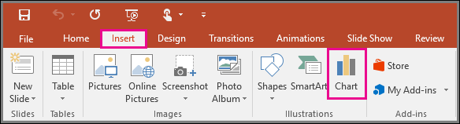
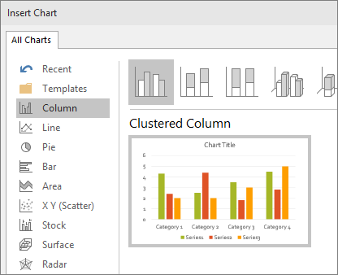
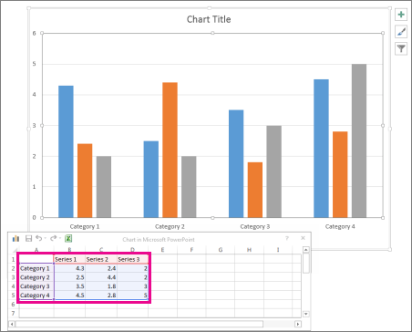

To create a simple chart from scratch in PowerPoint, click Insert > Chart and pick the chart you want.
Click Insert > Chart.
Click the chart type and then double-click the chart you want.
In the worksheet that appears, replace the placeholder data with your own information.
When you’ve finished, close the worksheet.